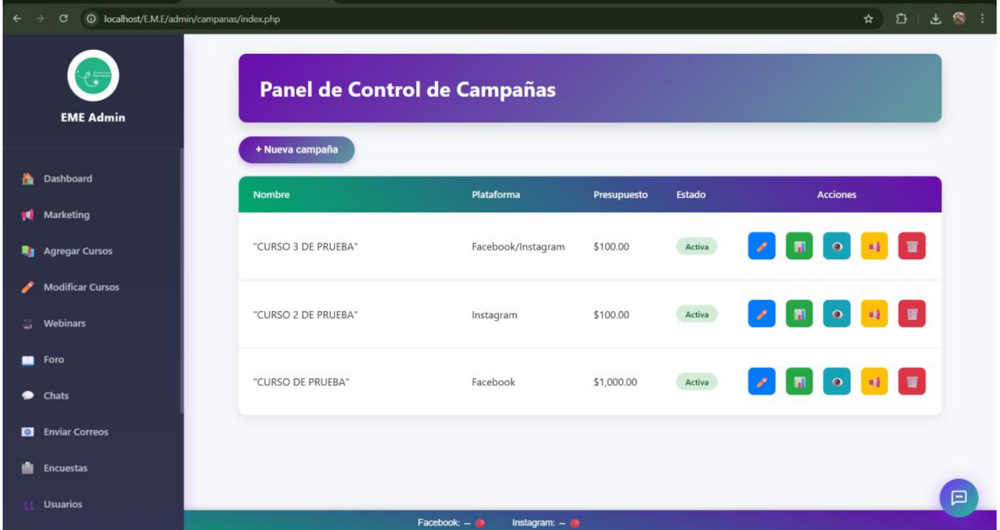

Plataforma de Marketing Estratégico
Sistema web desarrollado para administrar campañas publicitarias, automatizar publicaciones en redes sociales y analizar métricas en tiempo real mediante dashboards interactivos.

Problema
La institución realizaba el seguimiento de campañas, publicaciones y métricas manualmente, dificultando el análisis y la toma de decisiones.
Solución
Se desarrolló una plataforma que centraliza la gestión de campañas, automatiza publicaciones y obtiene métricas en tiempo real mediante APIs.
Resultado
Se optimizó el control de campañas, reduciendo tiempos de gestión y mejorando el análisis del rendimiento.